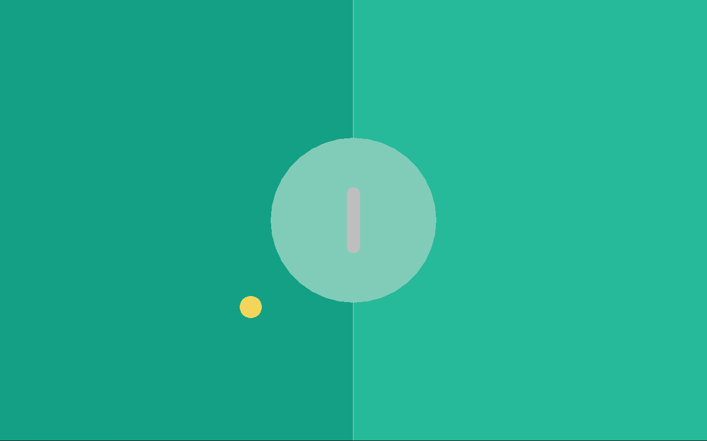

Paddles
Next up we will finally work on the paddles themselves. Since we have two paddles, the Cpu and the Player paddle, which are kinda similar but a bit different, we will use a func module for this task, since the job of a func-module is to provide reusable code which can be used across many entities. For now, we will still create a unified Paddle entity, even though this entity will be removed in the next chapter.
A simple paddle
Okay, so lets start again by thinking what data the paddle even needs. It needs a size (x and y since it's a rectangle), a position, and a speed, how fast the paddle can go. So, we end up with this data:
paddle.ft:
use Fip.raylib as rl
use "colors.ft"
data DPaddle:
i32x2 size;
f32x2 pos;
f32 speed;
DPaddle(size, pos, speed);
which we put into a new file, paddle.ft. We also know that we need a draw function to be able to draw the paddle to the screen. With this information we can now create the func module and the entity. The func module will be called FPaddleCommon since it contains the common functionality between both our paddles we will ultimately end up with:
func FPaddleCommon requires(DPaddle paddle):
const def draw():
return;
entity Paddle:
data: DPaddle;
func: FPaddleCommon;
Paddle(DPaddle);
The next thing which needs to be done, now that the overall composition structure is up, is to implement the draw function:
const def draw():
i32x2 render_pos = i32x2(paddle.pos) - paddle.size / 2;
rl.Rectangle rec = rl.Rectangle(render_pos.x, render_pos.y, paddle.size.x, paddle.size.y);
rl.DrawRectangleRounded(rec, 0.8, 0, Colors.white);
The paddle position always points at the center of the paddle rectangle. So, to be able to draw the rectangle we need to know where the top left corner of the rectangle, the render_pos, is located at. To draw the rectangle we use the DrawRectangleRounded function from raylib:
extern def DrawRectangleRounded(mut Rectangle rec, mut f32 roundness, mut i32 segments, mut Color color);
Lets now add the paddle to the main file. We need to create a paddle together with the ball:
ball := Ball(DBall(_));
ball.reset();
paddle := Paddle(DPaddle(_, f32x2(screen / 2), _));
And then draw it in the game loop:
// Draw the game objects
ball.draw();
paddle.draw();
And now the paddle is drawn in the center of the game board:

Moving the paddle
The next step is to make the paddle movable through keyboard presses. For now we just want to move the paddle up and down respectively. A very easy way to do this is to just add an update function to the paddle:
def update(f32 delta):
if rl.IsKeyDown(i32(rl.KeyboardKey.KEY_UP)):
paddle.pos = paddle.pos - (0.0, paddle.speed * delta);
if rl.IsKeyDown(i32(rl.KeyboardKey.KEY_DOWN)):
paddle.pos = paddle.pos + (0.0, paddle.speed * delta);
We use the IsKeyDown function of raylib here which actually expects the KeyboardKey enum but as C libraries often do, it is written to expect an i32 instead (not much Fip can do here) so that's why we need to cast the enum value to an i32 value before passing it to the function.
extern def IsKeyDown(mut i32 key) -> bool;
And in the main.ft file in the game loop we just call the update function every frame:
// Update game objects
ball.update(delta);
paddle.update(delta);
and now the paddle can move up and down using the up and down arrow keys of the keyboard! But we have a problem: we can move the paddle fully outside the screen, we don't want that to happen!
Clamping the paddle position
Clamping the paddle position to the screen bounds is pretty straight forward to do. Its nothing more than one single function, clamp_position which needs to be added:
def clamp_position():
const f32 border_distance = 10.0;
const f32 min_y = f32(paddle.size.y / 2) + border_distance;
const f32 max_y = f32(rl.GetScreenHeight() - paddle.size.y / 2) - border_distance;
if paddle.pos.y < min_y:
paddle.pos.y = min_y;
else if paddle.pos.y > max_y:
paddle.pos.y = max_y;
The function is pretty simple, we just check whether the y position is larger or smaller than our max or min values and clamp it to the respective max / min values.
Now, we just need to call the clamp_position in the update function:
def update(f32 delta):
// ...
FPaddleCommon.clamp_position(paddle);
at the very end of the function and now we successfully added position clamping to the paddle.